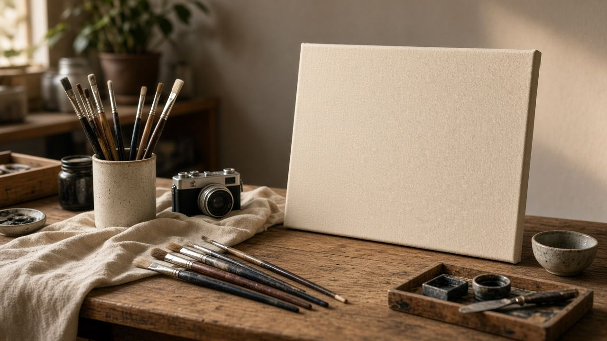

ذكاء اصطناعي
ذكاء اصطناعي
القسم ده مش كتالوج أدوات ولا وعود. بنشرح النموذج بيعمل إيه، ليه الجملة السلسة مش دليل إنها صح، وإيه اللي يحصل لما ترفع ملف لخدمة سحابية. لو بتعلن عن صفحة من هنا، الإعلان لازم يوصف الشرح ده مش منتج مش موجود.
 أساسيات
أساسياتالنموذج اللغوي بيعمل إيه بالظبط
بيكمل النص حسب أنماط اتدرب عليها. مش قاعدة بيانات، ومش شخص فاكر المصدر.
 مراجعة
مراجعةالجملة السلسة مش دليل إنها صحيحة
قائمة مراجعة للأسماء والتواريخ والاقتباسات قبل ما نص النموذج يدخل مقال أو إعلان.
 خصوصية
خصوصيةأداة في المتصفح ولا خدمة في السحابة
الفرق العملي: الملف بيخرج من جهازك ولا لأ، وإيه اللي لازم تقراه في شرح الأداة.

صورصور مولّدة: متقدّمهاش كإنها فوتوغرافيا حدث
القانون لسه مختلف بين البلدان. القاعدة التحريرية هنا أوضح: الصورة المركّبة تتوسّم، ومش تتحط خبر.
 دراسة
دراسةتستخدم النموذج في المذاكرة من غير ما تسلّم كلامه
أسئلة تدريب، وشرح خطوة أنت وقفت عندها، ثم قفل الأداة والكتابة بصياغتك. لوائح الجامعة تختلف.